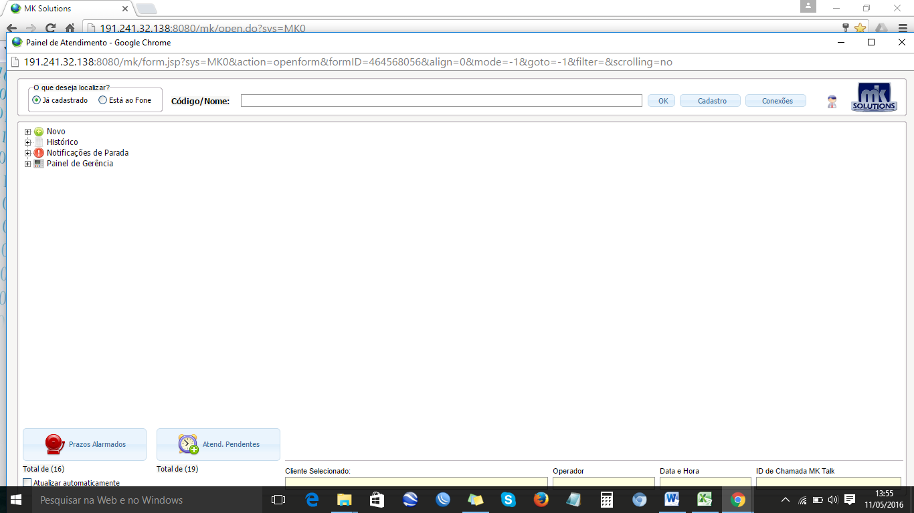
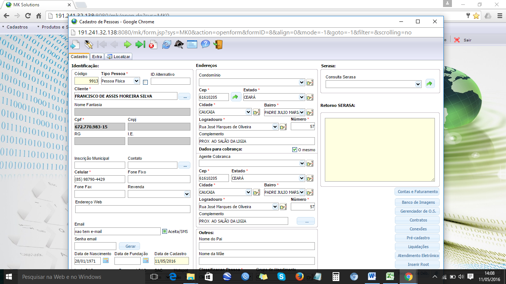
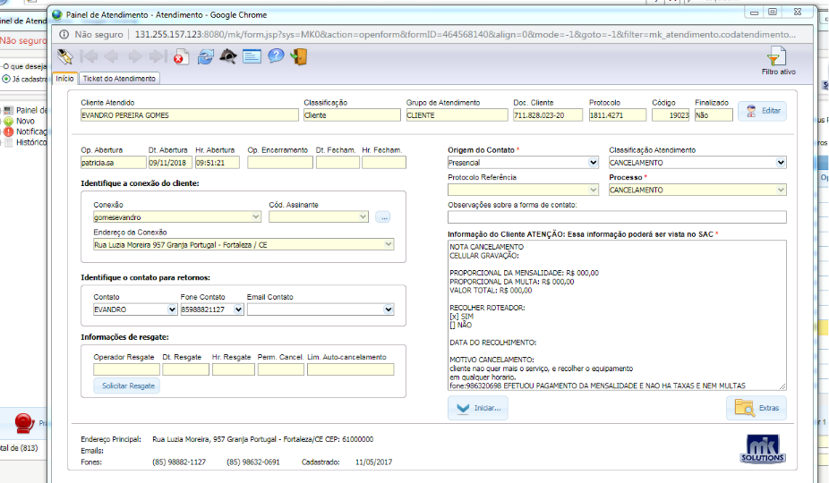
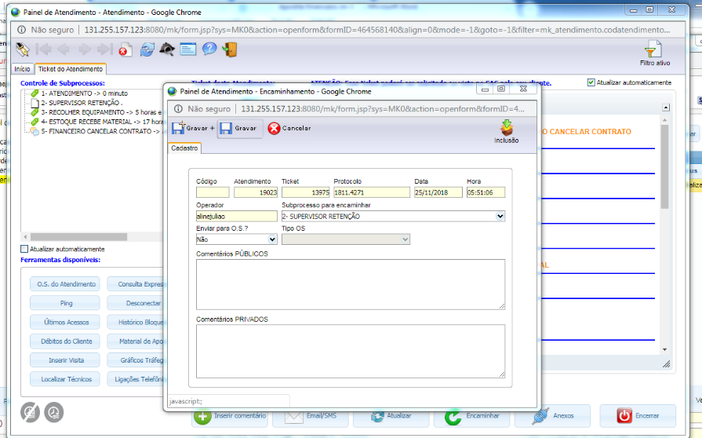
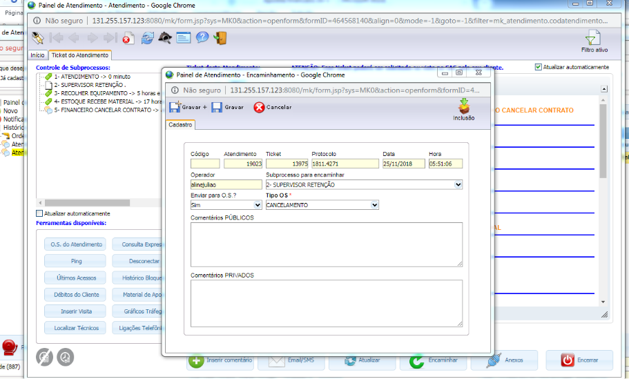
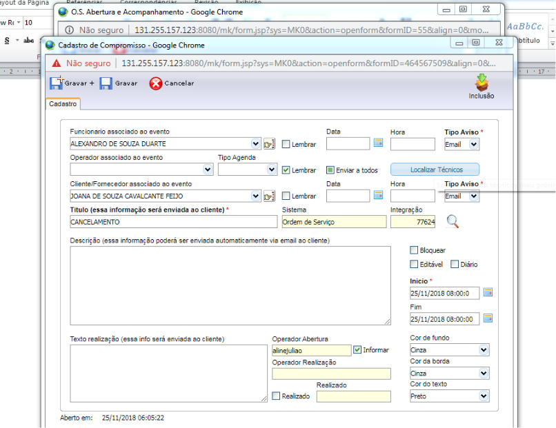
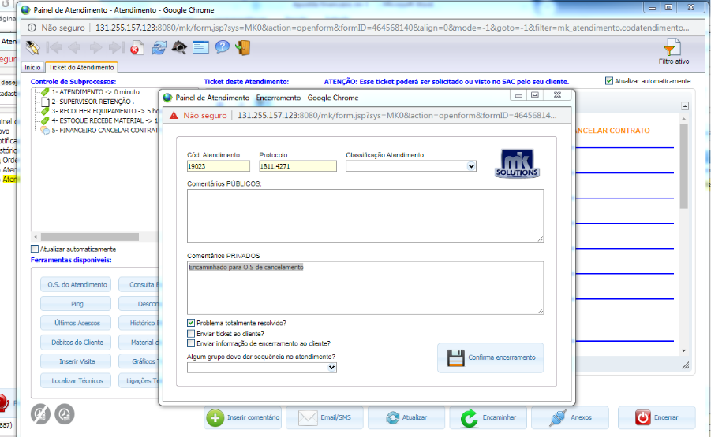

Voltar
Cancelamento
- Financeiro Agily Telecom (nome + comprimentos)
- Confirmar as informações cadastrais
- Qual o nome do titular do contrato?
- Acessar o mk Solutions a aba, Suporte / Painel de atendimento e serviço/ painel de atendimento
- Na aba Código/ Nome; informar o nome do titular e clicar ok
- Clicar na aba cadastro e confirmar os dados
- Qual Endereço e cep ?
- telefones para contato ( Obs.: Atualizar os números )
- Qual watsap ?
- Qual o e-mail ? (Obs.: Atualizar e-mail ou colocar não tem)


Cancelamento contrato a Pedido ( Insatisfação / Mudança )
Fazer as seguintes verificações:
Verificar o motivo. No caso de insatisfação devera ser feito uma retenção, oferecer atendimento imediato para solucionar o problema do cliente para que não haja o cancelamento.
Se o motivo for mudança de endereço sem viabilidade, perguntar o cliente se o mesmo deseja transferir a internet para o novo morador.
OBS: Caso o cliente queira continuar a solicitação do cancelamento, terá que informar o numero do CPF,data de nascimento e motivo do cancelamento.Informar ao cliente que o cancelamento só será concluído após a entrega dos equipamentos da empresa e verificar horário de disponibilidade do cliente.
- Verificar se tem ticket aberto para esse cliente; Na aba painel de atendimento/ Atendimento/ histórico /Atendimento.
No caso ticket aberto informar ao cliente para aguardar o retorno de ligação do financeiro
- Verificar se tem O.S aberta para esse cliente; Na aba painel de atendimento/ Atendimento/ histórico /Ordens de serviço.
No caso de O.S aberta informar ao cliente para aguardar atendimento.
Abertura do ticket:
Após essas verificações, selecionar a aba novo e preencher os campos no painel de atendimento:
Origem do contato= telefônico
Processo = Cancelamento
Informação do cliente = Relatar a solicitação do cliente, a confirmação do cpf,o motivo, horário de disponibilidade, Gravar e Iniciar.

- Finalizar o atendimento e Informar ao que iremos entrar em contato para concluir a solicitação.
- Encaminhar o Ticket para o sub processo Comercial Retenção.

Cancelamento por Insatisfação
O setor ira fazer contato com o cliente e tentar reverter a situação do cancelamento. Caso não seja possível o ticket será direcionado para uma O.S de recolhimento.
Obs: Em caso de cancelamento a pedido que não foi possível fazer a reversão da solicitação do cliente, finalizar com o mesmo processo abaixo.
Cancelamento por mudança endereço sem viabilidade
Encaminhar o Ticket para O.S,
- No painel de atendimento clicar na aba editar/Ticket de atendimento / Encaminhar / Enviar para O.S sim/ Tipo de O.S cancelamento e Gravar

- Preencher as seguintes informações: em defeito reclamado/ Relatar a solicitação do cliente, a confirmação do cpf,o motivo, horário de disponibilidade, tipo de O.S / Cancelamento, Data Ent/ atual , Hora Ent / atual e Gravar

Fazer o agendamento
- Em funcionário Associado ao evento/ nome do Técnico, em Titulo/ apagar o nome do cliente e colocar a descrição, Cancelamento, Desmarcar os campos bloquear e Editável, Inicio / data e hora atual, Cor fundo e borda/ Cinza, cor de texto/ Preto e gravar

Encerrar o ticket
- Na aba painel de atendimento/ Seleciona a aba Ticket de atendimento, clica em encerrar, coloca o comentário do atendimento em comentários públicos e Confirmar o encerramento.

Voltar